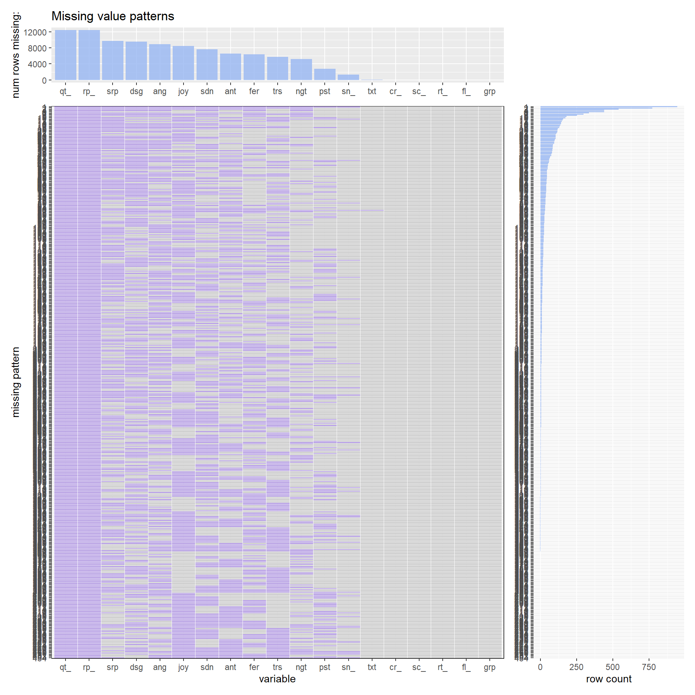

Chapter 4 Missing values
Here is the missing value plot function we defined in Problem Set 4.

It is hard to draw any significant conclusion from columns that have more than 90% of entries with missing values. Thus, we decided to remove all columns that have NA in more than 90% of entries. As a matter of fact, “quote_count” and “reply_count” columns have 100% of the entries with NA, so they are removed from the dataframe.
Also, there are 33 rows that have NA for text, which is the tweet. We can’t perform any sentiment analysis on rows that have no tweet, so we removed those 33 rows.
Also, we want to remove the rows that have NA for both “positive” and “negative” sentiments. Having NA for those sentiments mean that the tweet doesn’t contain any information to calculate sentiment score, so we removed those rows.
In addition, for sentiment columns - joy, trust, anticipation, sadness, fear, anger, surprise, disgust, positive, negative - we replaced all NAs with 0s because NA in those columns means that the tweet didn’t contain any word that pertains to those sentiments. Having 0s in place of NAs will ensure that all the sentiment columns have valid number entries for the graphs in Ch.5 and 6 to use.
After we dealt with all the missing values, we ended up getting the dataset that has no NA. Because we replaced all NAs that were in the sentiments columns to 0, we have the above graph that has no missing values.